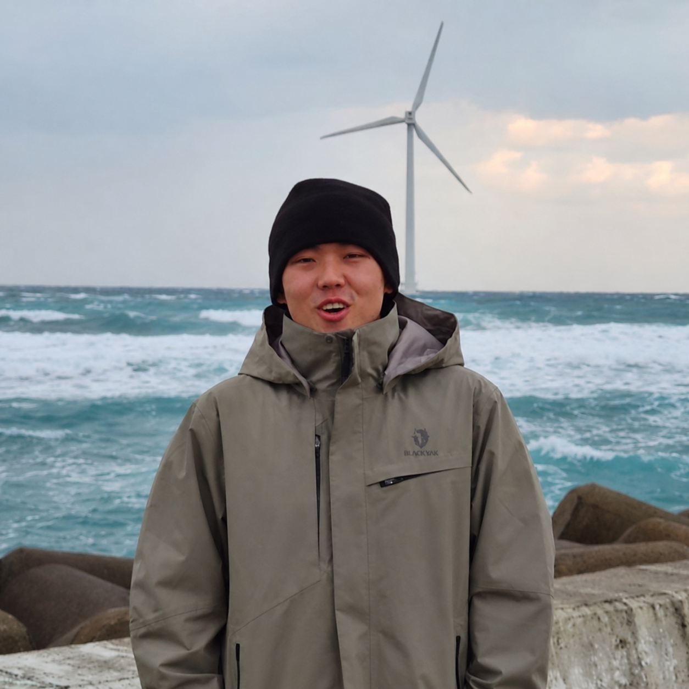
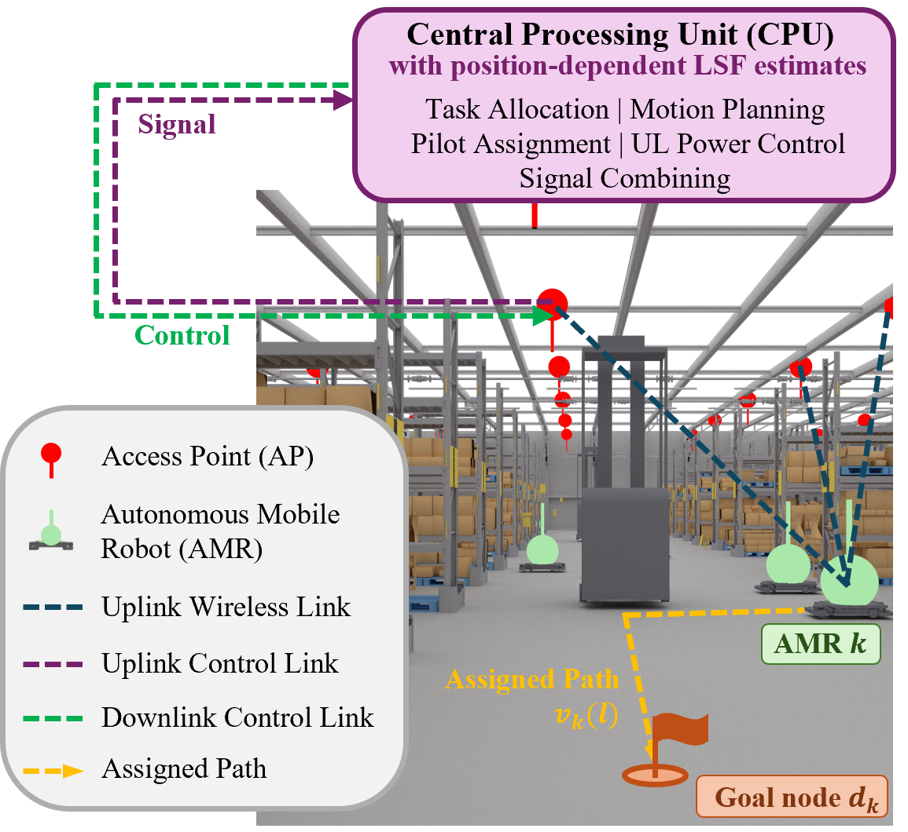

Seoul National University
B.S. Mechanical Engineering · Double Major, Electrical & Computer Engineering
GPA: 4.06 / 4.30

Undergraduate Researcher · Seoul National University
I study robot learning and the systems that make learned autonomy reliable in the physical world. My current work focuses on geometry-aware generative policies for data-efficient robot control and communication-aware coordination for multi-robot systems.
My long-term goal is to build scalable intelligent robotic systems that remain effective under limited data, computation, and communication resources.
Seoul National University
B.S. Mechanical Engineering · Double Major, Electrical & Computer Engineering
GPA: 4.06 / 4.30
University of California San Diego
Exchange Student
Korea Science Academy of KAIST
High School Diploma
I am interested in co-designing learning algorithms and deployment systems around the structure and constraints of real robots. Two current projects approach that question from complementary directions.
Standard flow-matching policies generate trajectories in the full action space even when feasible robot motion lies near a lower-dimensional structure. Neighborhood-Guided Flow Matching (NGFM) uses local neighborhoods of the given demo to estimate coordinate charts and guide probability paths, introducing a geometric bias without requiring an explicit global manifold model. I am currently evaluating it across simulated and real-robot settings.
NGFM trajectory generation in a simulated manipulation environment.
Cell-free wireless systems are attracting growing interest for indoor multi-robot deployments because they can provide more uniform connectivity and help maintain high quality of service for every robot. In such cell-free cloud-robotic warehouses, shared wireless conditions can directly affect task completion. I developed a contamination-aware allocation method that couples robot motion with pilot contamination and communication quality, aiming to improve both connectivity and fleet-level task efficiency.

Cell-free cloud-robotic AMR warehouse simulation.
Contamination-Aware Task Allocation for Cell-Free Cloud-Robotic AMR Warehouses
Submitted to IEEE Internet of Things Journal.
Undergraduate Researcher, Advanced Intelligent Systems Lab
Seoul National University · Advisor: Prof. Hyun Jong Yang
Communication-aware multi-robot control, wireless resource allocation, and segmentation-based perception for warehouse robotic systems.
Undergraduate Researcher, Robotics Laboratory
Seoul National University · Advisor: Prof. Frank C. Park
MuJoCo datasets for generative motion policies and geometry-aware flow matching for constrained robotic trajectory data.
Control and Robotics
Computation and Systems